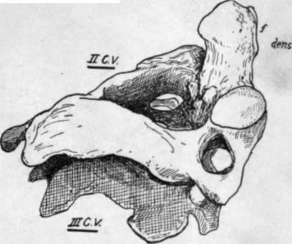

Seventh Cervical Vertebra
Description
This section is from the book "The Anatomy Of The Human Skeleton", by J. Ernest Frazer. Also available from Amazon: The anatomy of the human skeleton.
Seventh Cervical Vertebra
This differs from those just described mainly in its long, strong, and non-bifid spine, and in the smallness of its arterial foramen. The condition of the spine is associated with the attachment of the ligamentum nuchas and certain strong muscles, and it can be felt in the living neck, whence this segment is sometimes termed " vertebra prominens." The costo-transverse foramen is small because it does not transmit the vertebral artery.
Other modifications are seen in the smallness of the anterior and marked size of the posterior tubercles on the " transverse process,v with corresponding differences in the constituent elements : occasionally, however, the costal element may be enlarged and become free, forming a cervical rib. Occasionally, on the othei hand, it may be absent. The body may sometimes present a mark, though hardly a facet, showing the situation of the head of the first rib, or the attachment of its ligaments on the lower and lateral margin.
Atlas
Easily recognised : it has no body attached to it, this part having joined the Axis. It presents an anterior arch, and a posterior arch, with a thick lateral mass on each side joining these arches : lateral mass carries the upper and lower articular processes, of which the former is markedly concave for reception of occipital condyle and shows a tendency to be subdivided at junction of the two arches.
A prominent median anterior tubercle is on the front of the anterior arch, and on its back aspect a smooth articular facet for the odontoid process of the axis. A small rough posterior tubercle represents the spinous process on the posterior arch.
Fig. 11.-First cervical vertebra, from above: art. groove and foramen for vertebral artery ; a.t. anterior tubercle ; p.t. posterior tubercle ; lig. ridge for posterior occipito-atloid ligaments ; V. notch for small vein.
Posterior arch shows on its upper surface a broad groove for the vertebral artery and suboccipital nerve, just behind the articular mass and leading from the foramen in the transverse process ; behind the groove, a ridge for the posterior occipito-atlan toid ligament. Transverse process projects from the lateral mass and has a largo foramen : its front bar may show a small terminal tubercle, but the end of the process corresponds with the posterior tubercles of the lower vertebrae. The large hole enclosed by the arches has a front part into which the odontoid process projects from below, and a larger posterior part which is the proper spinal foramen. Lower articular processes, being broader than the upper ones, encroach somewhat on the front part of the space by their inner margins, and on these are vascular foramina and tuber-culated roughnesses for the attachment of the transverse ligament that passes behind the odontoid process, and of the accessory alto-axoid ligament.
Axis
Remarkable owing to the presence of the odontoid process, or dens, which projects upwards : this is really the centrum of the Atlas, separated from that bone and fixed to the upper surface of body of Axis, and it articulates by its front surface with the facet on the anterior arch of the Atlas. Dens has an extremity roughened by attachment of occipito-odontoid ligaments, and a slight constriction behind for the transverse ligament, a bursa intervening ; the true body of the Axis is below the base of the process. Upper articular surfaces look upwards and outwards and are placed a little distance outside the base of odontoid, but the lower processes are further back, corresponding with the position of the process in the lower cervical segments : the second nerve makes its exit behind the upper process, and the third in front of the lower, as in the vertebrae below the Axis.
Transverse process short, ending in a single (posterior) tubercle : arterial foramen is a canal which, passing upwards, reaches under part of upper articular mass and turns outwards sharply. Internal to the arterial canal a thick column of bone transmits the weight of the Atlas and head from the upper articular process to the body. The laminae are strong, and a broad, strong, elongated bifid spine is continued back from them.
The pedicles can be seen from below, and recognised as being in their usual positions, but their upper surfaces are hidden by the upper articular processes
The nodding movements of the skull (flexion and extension) take place between the Atlas and Occipital, while rotation is carried out between the Atlas and Axis. To permit and control these movements there are, in addition to the capsules of the articular processes, two important systems of ligaments. The first is a strong band thrown across from one lateral mass of the Atlas to the other, behind the odontoid process, thus holding the process up against the front arch of the Atlas, and completing a collar round the process that grasps it tightly, with intervening bursas : evidently with such a band, the Atlas cannot move away from the odontoid, but can rotate round it as a centre. This transverse ligament is connected by upper and lower crura of vertical fibres with the occiput and back of the body of the Axis respectively, but these bands are comparatively weak and do not seem to be of much importance in limiting movement : the whole structure is sometimes referred to as the cruciform ligament (Fig. 13).
Fig. 12 -The second cervical vertebra shown resting on the third vertebra; seen from the right and above. f. facet on the front of odontoid process. Observe that only the lower articular process is in line with those of the vertebra; below.
The second system consists of strong and thick bands connecting the upper end of the odontoid process with the margin of the foramen magnum in the occipital bone : there is one of these on each side, lateral occipito-odontoid or check ligaments, and a feeble median one, between the process and the front margin of the foramen, termed the middle odontoid or suspensory ligament. The middle band has no mechanical value, being only the continuation into the skull of the perinotochordal tissues, but the lateral bands are of prime importance. Flexion and extension between the Atlas and Axis is effectively prevented by the close grip obtained by the anterior arch and transverse ligament on the odontoid process. On the other hand, rotation between the skull and the Atlas is checked as a result of the deep concavity of the upper articular surfaces of the Atlas : any attempt at rotation of the Occipital tends at once to lift the bone up on to the raised front and back margins of these surfaces and thus immediately tightens the check ligaments and anterior occipito-atloid, and is moreover resisted by all the short muscles passing to the neighbouring skull base from the column.
Thus, for practical purposes, we may look on the skull and Atlas as one mass rotating on the Axis, and on the Atlas and Axis as one mass on which the skull can perform nodding movements : so the skull and the Axis are on opposite sides in both these forms of movement, and the occipito-odontoidal ligaments become the most important bands associated with limitations of these movements.
Fig. 13.-The ligaments of the occipito-atlo-axoid articulation exposed by removal of the neural arches and contents of the canal. The posterior common lig. is continuous with the membrana tectoria, which has been divided and turned back at C.C. to expose the cruciform lig. A. This covers the back of the odontoid, but the check ligaments B. can be seen passing to the upper end of the process from the margin of the foramen magnum. Access, is the accessory atlo-axoid lig. The median " suspensory " lig. is hidden by the upper crus of the cruciform lig.
Flexion of the head is checked by tightening of these ligaments : this is seen in Fig. 14, A, where it is shown that when the skull is brought down from the level AA to BB the condyle rotates in the articular cup of the Atlas, and the upper attachment of the check ligament is carried backwards and upwards (from a to b) on the condyle, so tightening the band and checking the movement.
The opposite movement is checked by the tightening of the anterior occipito-atloid ligament (aoa) and the front fibres of the articular capsule.
Rotation is also limited by the lateral occipito-odontoid ligaments. These are shown in Fig. 13, and consist of a thick mass of fibres on each side, the posterior and deeper ones showing a tendency to pass forward under the more superficial ones : some fibres, not shown, also run across without any definite connection with the process. The area of insertion into the odontoid is on its postero-lateral aspect, so that the deeper fibres reach the bone in front of the position of the centre of rotation, while the " anterior " and superficial fibres, crossing these, reach the process behind this centre. Rotation takes place between the Atlas and Axis, but for this movement the Atlas and Occipital may be looked on as one mass, so that the ligaments check the rotation as seen in Fig. 14, B.
Here it is shown that when rotation occurs, as for instance from the position A to B, that is to the right, the right posterior fibres /> are carried back on the margin of the foramen magnum and so stretched, and the left anterior fibres are rendered taut by being carried forward, both of these sets of fibres being attached to the odontoid in a relation to the centre of rotation opposite to that of the direction in which they are carried by the occipital bone.
A certain amount of " screw " also occurs. A glance at the surfaces shows that, as the atlas turns, one of its surfaces must descend while the other ascends. The descent leads to slackening of the ligament on that side, so giving more range. Any decrease in range on the other side is compensated by slight tilting of the head to the side of the ascent, a movement possible to some degree at the occipital joint.
Fig. 14.-Schemes to illustrate the action of the lateral occipito-odontoid ligaments in (A) flexion and (B) rotation of the head.
The cruciate and occipito-odontoid ligaments are covered behind by the membrana tectoria or occipito-axoid ligament, a broad thin band that extends to the basilar groove on the occipital bone from the back of the body of the Axis : it has the spinal dura mater in contact with it and attached to it, and it becomes continuous with the posterior common ligament on the Axis. There are some variable lateral fibres of this sheet, attached to the occipital behind the anterior condylar foramina.
The capsules of the joints on the two first vertebras are loose, and do not interfere with the movements, save in the case of the occipito-atloid capsule and extension of the head. There is, however, on the postero-internal aspect of the atlo-axoid joint a strong accessory band that might conceivably help to limit rotation toward the opposite side. The band is sometimes considered to be part of the lateral sheet of the membrana tectoria.
Continue to:
- prev: Cervical Characters (Third To Sixth)
- Table of Contents
- next: Detailed Consideration Of Cervical Vertebrae